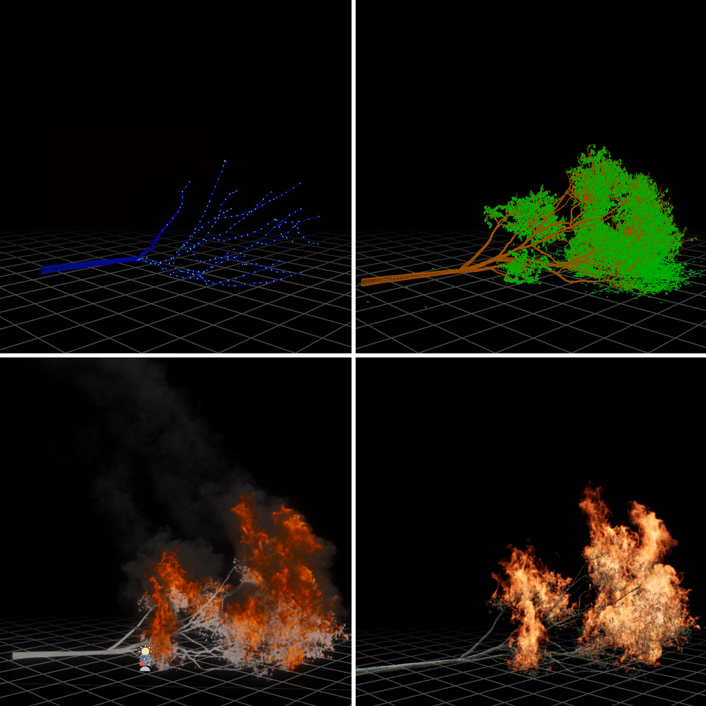
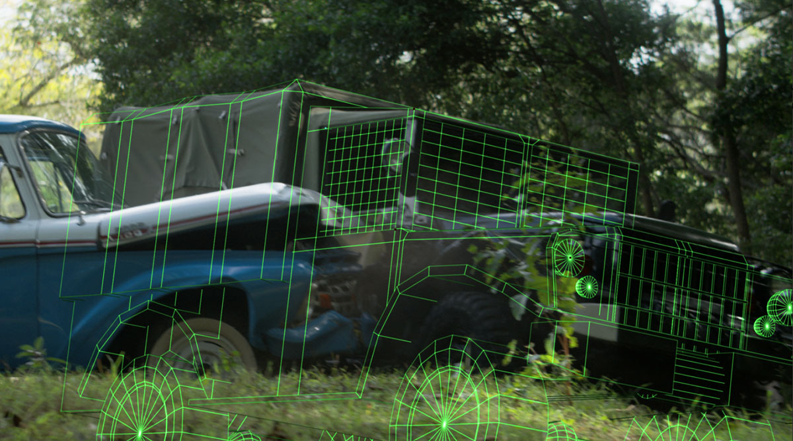
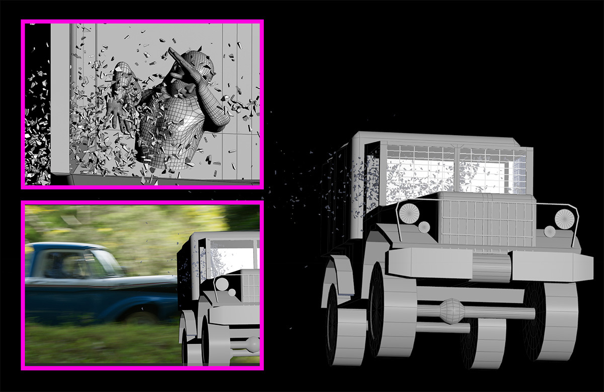

When a massive sinkhole swallows part of Los Angeles, it splits a family in two — separating them across time and into an unexplained primeval world. La Brea is a high-concept sci-fi adventure series combining prehistoric environments, creature work and large-scale disaster sequences on NBC. Three seasons shot across two Australian states, generating an estimated 1,100 jobs in the local industry.
Future Associate delivered 100+ VFX shots across Season 3. The work centred on fire and smoke — building a Houdini and EmberGen pipeline that combined technical precision with the real-time iteration speed an episodic schedule demands. Alongside the fire work, the season included a multi-plate car crash sequence requiring fully CGI vehicle doubles and Houdini physics.
/ Fire & Smoke Pipeline
Burning trees and environment fire were constructed in 3D in Houdini, with EmberGen handling fire generation. EmberGen's real-time features let effects artists experiment quickly and apply feedback from production on how the fires looked and behaved.
Critical to an episodic schedule, adjustments to fire spread, density and behaviour could be applied and reviewed quickly. For shots involving movement — a tree swaying, or falling — a flexible skeleton rig was built in Houdini and carefully matched in appearance to the actual environment in the footage. The rig gave animators control over how the tree responded to wind and collisions, showing correct weight through the canopy. That animation was then taken into EmberGen, where fire was added and further movement mapped out in detail.

Embers were a crucial detail. Custom particle emitters were tuned so that emission rate and burst size produced unique, irregular sparks that could be picked up and carried by virtual winds.
Collision geometry was built for any shot where embers needed to interact with people, walls, trees or other objects — ensuring they felt physically present in the scene rather than floating over it.
/ Episode 4 — The Firestorm
The standout sequence of the season was Episode 4's prehistoric firestorm in 10,000 BC — Sam and Lucas trapped in a burning forest, searching for a dog while surrounded by constant ember attacks, spot fires and smoke, before finding refuge between two boulders as the fire front blasts overhead.
For shots where characters were engulfed by an out-of-control wildfire, in-camera practical effects — smoke and orange lighting — were combined with VFX to achieve the right balance of realism. To blend these elements convincingly, the entire set was reconstructed in 3D, allowing the fire to wrap around set-pieces correctly.
The central rocks were mapped out as collision geometry, wind direction and timing were planned to the frame, and the fire front was choreographed to hit specific parts of the set at exactly the right moment to give the characters their last-second escape.
"Lindsay and his team at Future Associate did a great job utilizing their large library of fire elements, smoke, Houdini fire effects, and embers to build and ramp up the tension in the scene."
/ Car Crash Sequence
Future Associate also delivered a car crash sequence combining multiple plate shots with CGI vehicle models. Footage of the collision from multiple camera angles was provided, from which CGI doubles of both cars were modelled and animated.
To ensure correct scale and period accuracy, army construction guides were sourced for the Jeep.

Once the models were aligned with the on-set movement, Houdini physics were used to add breakup detail — glass shattering, debris scatter — with shard size and timing adjustable in post to match the director's cut. The final shot combined all elements into a single seamless take.
